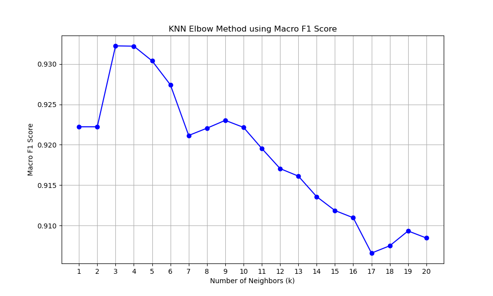
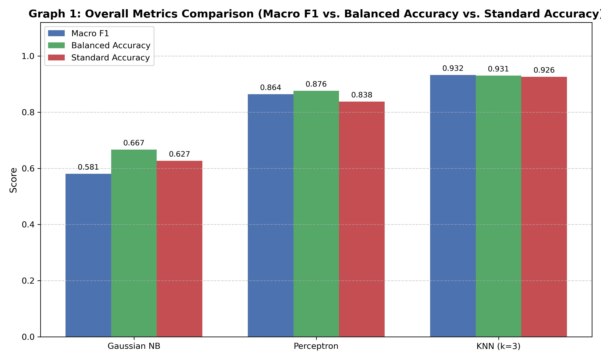
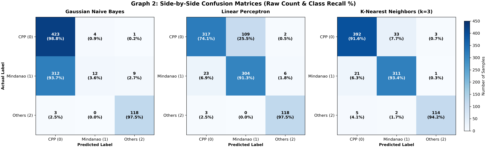

Section 01 · Context
1. Problem Statement and Motivation
The Philippines has experienced decades of internal armed conflict involving distinct insurgent
movements,
secessionist fronts, and localized extremist groups. In historical conflict records compiled by the
Uppsala
Conflict Data Program (UCDP), the column side_b identifies the specific non-state or
insurgent
actor involved in an incident against the Government of the Philippines (side_a).
Problem Statement: Given quantitative attributes of a recorded armed conflict event—specifically its geographical coordinates, casualty breakdown, violence type, and engagement duration—this project aims to classify which category of group was responsible for the incident across three target classes:
- Class 0 (CPP): The Communist Party of the Philippines / New People's Army (CPP/NPA), which wages a nationwide rural guerrilla insurgency.
- Class 1 (Mindanao): Mindanao-based regional secessionist and extremist groups (such as the MILF, MNLF, ASG, BIFF, and Maute), which operate primarily in historical strongholds in southern Philippines.
- Class 2 (Others): Non-insurgent or other distinct categories recorded in the dataset, specifically Civilians (in one-sided violence records), Government of Kuwait, and Military faction (forces of Honasan, Abenina & Zumel).
Motivation: Different armed groups exhibit distinct geographical footprints and tactical behaviors. Some groups conduct small, brief hit-and-run ambushes across rural provinces, whereas others engage in prolonged, multi-day sieges or attacks with high civilian casualties within specific regional territories. By comparing three foundational machine learning paradigms—Gaussian Naive Bayes (probabilistic), Linear Perceptron (linear decision boundary), and K-Nearest Neighbors (distance-based neighborhood voting)—we evaluate how well classical algorithms can distinguish insurgent operational signatures from real-world spatio-temporal conflict data.
Section 02 · Data Architecture
2. Dataset Description
- Dataset Title: Conflict Data for Philippines
- Source: Uppsala Conflict Data Program (UCDP), hosted via the Humanitarian Data Exchange (HDX): UCDP Philippines Dataset on HDX.
- Dataset Size: 4,368 total rows and 9 processed columns (8 numerical input features
and 1
target class variable).
- Class 0 (CPP): 2,140 total instances (1,712 training / 428 testing)
- Class 1 (Mindanao): 1,631 total instances (1,298 training / 333 testing)
- Class 2 (Others): 597 total instances (476 training / 121 testing)
Input Features (8) and Target Variable (1)
| Processed Index | Feature / Variable Name | Raw CSV Column Index | Data Type | Description |
|---|---|---|---|---|
| 0 | longitude |
30 | float |
Geographical longitude coordinate where the conflict event occurred. |
| 1 | latitude |
29 | float |
Geographical latitude coordinate where the conflict event occurred. |
| 2 | deaths_a |
41 | int |
Fatalities sustained by Side A (Philippine government forces). |
| 3 | deaths_b |
42 | int |
Fatalities sustained by Side B (rebel/insurgent organization). |
| 4 | deaths_civilians |
43 | int |
Fatalities sustained by civilians during the incident. |
| 5 | best |
45 | int |
UCDP best estimate of total fatalities resulting from the event. |
| 6 | type_of_violence |
5 | int |
UCDP violence category code (1 = state-based, 2 = non-state, 3 = one-sided violence). |
| 7 | duration_days |
39 & 40 (derived) | int |
Engineered duration of the clash in days, computed from
date_end - date_start.
|
| 8 (Target) | side_b |
17 | int (0, 1, 2) |
Target classification label: 0 = CPP, 1 = Mindanao groups,
2 = Others.
|
Preprocessing Steps (preprocess.py)
- CSV Loading: Raw records are loaded from
conflict_data_phl.csvusing Python's built-incsvmodule, skipping the header row. - Duration Feature Engineering: For each record,
date_start(index 39) anddate_end(index 40) are parsed viadatetime.fromisoformat(). The conflict duration in days is computed as(date_end - date_start).days; if either date field is missing,duration_daysdefaults to0. - Type Casting & Column Ordering: Each record is formatted as
[longitude, latitude, deaths_a, deaths_b, deaths_civilians, best, type_of_violence, duration_days, side_b], casting coordinates tofloatand casualty/violence/duration values toint. - Target Label Encoding (
classify_groups): After stratified splitting by originalside_bname, the target strings are mapped into three integer classes:"CPP"→0"Civilians","Government of Kuwait", or"Military faction (forces of Honasan, Abenina & Zumel)"→2- All remaining armed groups (Mindanao regional groups) →
1
Section 03 · Algorithms
3. Methods
All three machine learning algorithms were implemented from scratch in pure Python without external machine learning libraries.
3.1 Gaussian Naive Bayes (gaussian_nb.py)
- How It Works: Gaussian Naive Bayes is a probabilistic classifier based on Bayes' theorem. It assumes that all features are conditionally independent given the class label and that continuous features within each class follow a Gaussian (normal) probability distribution.
- Implementation Details:
- During
fit(train_data), training records are partitioned by class label c ∈ {0, 1, 2}. For each class, the model computes the prior probability P(c) = Nc / Ntotal, the sample mean μc,j for each feature j, and the sample variance σ2c,j for each feature j. - A variance smoothing constant (
smoothing = 1e-9) is added to every calculated variance to prevent division-by-zero or logarithm domain errors when a feature has near-zero variance. - During
predict(test_data), to avoid floating-point underflow, the classifier computes the log-posterior score for each class by summing the log-prior and the Gaussian log-likelihoods across all 8 features:log_prob = log(P(c)) + sum( -0.5 * log(2 * pi * var) - ((x - mean)^2) / (2 * var) ) - The class with the maximum total log-probability is returned as the prediction.
- During
3.2 Linear Perceptron (perceptron.py)
- How It Works: The Perceptron is a linear classifier that learns a hyperplane decision boundary by iteratively adjusting feature weights and a bias term whenever it misclassifies a training sample.
- Implementation Details:
- To support 3-class classification (
0,1,2), the model implements a One-vs-Rest (OvR) strategy inPerceptron. Three independent binary perceptrons are trained—one per class. - Weights for all 8 features and the bias for each class are initialized to
0.0. - For a given target class c, training samples belonging to class c are assigned a binary target y = +1, while samples from all other classes are assigned y = -1.
- In each epoch (up to
max_epochs = 100), each sample's linear score zc = bc + ∑ wc,j xj is passed through a step sign activation function (sgn(z) = +1if z > 0, else-1). - Whenever the predicted sign differs from y, the weights and bias are updated via the
Perceptron learning rule:
w[c][j] += learning_rate * (target - predicted) * x[j] b[c] += learning_rate * (target - predicted) - An early stopping check terminates training for class c if an entire epoch completes
with zero weight updates. However, because none of the three One-vs-Rest subproblems in this
dataset is linearly separable, early stopping never triggers and all three binary
perceptrons run for the full
max_epochs = 100without converging (analyzed in Section 6). - During inference (
predict_one), the raw linear combination score zc is computed across all three class weight vectors, and the class producing the highest linear score is selected.
- To support 3-class classification (
3.3 K-Nearest Neighbors (knn.py)
- How It Works: K-Nearest Neighbors (KNN) is a non-parametric, instance-based learning algorithm that classifies a new sample based on the majority label among its k closest training instances in the feature space.
- Implementation Details:
fit(training_data)stores the preprocessed training records in memory.- During
predict(testing_data), for every test instance, the model calculates the Minkowski distance to every training instance across all 8 numerical features:d = ( sum( |test[j] - train[j]|^p for j in 0..7 ) )^(1/p)Withp = 2, this computes the standard Euclidean distance. - All
(distance, label)pairs are sorted in ascending order of distance, and the topk = 3nearest neighbors are retained. - The
counter()helper counts votes across the 3 classes. If a tie occurs among the maximum vote counts, the farthest neighbor in the current k-subset is iteratively removed (distances.pop()) and votes are recounted until a single unambiguous winner emerges.
Section 04 · Evaluation Protocol
4. Experimental Setup
4.1 Data Splits (split.py)
- Split Ratio: 80% Training / 20% Testing.
- Stratified Grouping by Original Actor: Before converting
side_binto numeric classes,split_dataset()groups all 4,368 records into a dictionary keyed by the originalside_barmed-group name. Within each group, records are shuffled and the firstint(len(group) * 0.8)instances are assigned to the training set, while the remaining 20% are assigned to the testing set. This guarantees that both large insurgent movements and smaller factions are proportionally represented. - Reproducibility: A fixed random seed (
SEED = 67) is used both when shuffling individual armed-group lists and when shuffling the combined training and testing sets. - Final Partition Sizes: 3,486 training instances and 882 testing instances (Test support: 428 in Class 0, 333 in Class 1, and 121 in Class 2). All three models are trained and evaluated on the exact same split.
4.2 Evaluation Metrics
All evaluation metrics were implemented from scratch across recall_precision.py,
balanced_accuracy.py, macrof1.py, and confusion_matrix.py:
- Base Confusion Counts (
get_scores): Tallies True Positives (TPc), False Positives (FPc), and False Negatives (FNc) for each class c ∈ {0, 1, 2} in a single pass. - Standard Accuracy (
count_correct): Proportion of total test instances classified correctly:Accuracy = Correct Predictions / Total Samples. - Per-Class & Macro Precision and Recall (
class_recall_precision,precision,recall):Precision_c = TP_c / (TP_c + FP_c)andRecall_c = TP_c / (TP_c + FN_c)(returning 0 if the denominator is 0).- Macro Precision and Macro Recall take the unweighted arithmetic mean across all 3 classes so minority classes carry equal weight to majority classes.
- Balanced Accuracy (
balanced_accuracy.py): Computed as the unweighted average of recall scores across all three classes ((Recall_0 + Recall_1 + Recall_2) / 3), which is mathematically equivalent to Macro Recall and prevents majority-class dominance from inflating the score. - Macro F1-Score (
macrof1.py): Unweighted average of the per-class F1-scores across all three classes:Macro F1 = (1 / 3) * sum( (2 * Precision_c * Recall_c) / (Precision_c + Recall_c) ) - 3×3 Confusion Matrix (
confusion_matrix.py): Cross-tabulates actual classes (rows) against predicted classes (columns), reporting both raw sample counts and row-normalized percentages (per-class recall).
4.3 Hyperparameters and Tuning
- Gaussian Naive Bayes: Variance smoothing =
1e-9. - Linear Perceptron: Learning rate η =
0.01, maximum epochs =100, initial bias =0.0. None of the three One-vs-Rest binary perceptrons converges within 100 epochs, so training terminates at the epoch cap rather than via early stopping. Multiple positive learning rates (η ∈ {0.0001,0.01,0.1,1.0}) were tested during sensitivity analysis and produced identical test metrics (83.79% accuracy, 86.43% Macro F1)—not because of convergence, but because zero-initialized weights and bias (0.0) scale strictly linearly with η (wc(η) = η·wc(1)), leaving both the training sign decisionssgn(z)and inference rankingsargmax(z_c)invariant to η; thus η =0.01was maintained. - K-Nearest Neighbors (k Optimization via
bestk.py): Distance power p =2(Euclidean distance) and k =3neighbors. To determine the optimal k, the classifier was evaluated across k ∈ {1, 2, …, 20} using Macro F1-Score as the primary selection criterion:- At k = 1 and k = 2, the model achieved a baseline Macro F1 of approximately 0.922.
- Performance peaked at k = 3 with a Macro F1 of 0.9322 (93.22%), while k = 4 achieved a nearly identical score just above 0.932. k = 3 was chosen because it delivered the highest test score and uses an odd neighborhood size to minimize voting ties.
- For k = 5 to k = 20, Macro F1 steadily declined (reaching ~0.907 at k = 17 and ~0.908 at k = 20) as larger neighborhoods over-smoothed local territorial boundaries.

k = 1..20 on
the
882-event test split using Euclidean distance (p = 2), peaking at k = 3
(0.9322) before steadily declining due to spatial over-smoothing. Source: UCDP /
bestk.py.
Section 05 · Empirical Findings
5. Results
Table 1: Overall Model Evaluation Metrics
| Model | Correct / Total | Standard Accuracy (%) | Balanced Accuracy (%) | Macro Precision (%) | Macro Recall (%) | Macro F1 (%) |
|---|---|---|---|---|---|---|
| Gaussian Naive Bayes | 553 / 882 | 62.70% | 66.65% | 74.83% | 66.65% | 58.07% |
| Linear Perceptron | 739 / 882 | 83.79% | 87.63% | 86.56% | 87.63% | 86.43% |
| K-Nearest Neighbors (k=3) | 817 / 882 | 92.63% | 93.07% | 93.42% | 93.07% | 93.22% |

n = 882).
K-Nearest Neighbors (k = 3) led every global evaluation metric at 93.22% Macro F1 and 92.63% accuracy—outperforming Linear Perceptron by nearly seven points and Gaussian Naive Bayes by more than thirty-five.

Table 2: Per-Class Performance Breakdown — View raw data (9 rows)
| Model | Class Label | Support | Precision (%) | Recall / Class Acc (%) | Class F1 (%) |
|---|---|---|---|---|---|
| Gaussian Naive Bayes | 0 (CPP) | 428 | 57.32% | 98.83% | 72.56% |
| Gaussian Naive Bayes | 1 (Mindanao) | 333 | 75.00% | 3.60% | 6.88% |
| Gaussian Naive Bayes | 2 (Others) | 121 | 92.19% | 97.52% | 94.78% |
| Linear Perceptron | 0 (CPP) | 428 | 92.42% | 74.07% | 82.23% |
| Linear Perceptron | 1 (Mindanao) | 333 | 73.61% | 91.29% | 81.50% |
| Linear Perceptron | 2 (Others) | 121 | 93.65% | 97.52% | 95.55% |
| K-Nearest Neighbors (k=3) | 0 (CPP) | 428 | 93.78% | 91.59% | 92.67% |
| K-Nearest Neighbors (k=3) | 1 (Mindanao) | 333 | 89.88% | 93.39% | 91.61% |
| K-Nearest Neighbors (k=3) | 2 (Others) | 121 | 96.61% | 94.21% | 95.40% |

Table 3: Confusion Matrices (Raw Counts & Row-Normalized Class Recall %) — View raw data
Gaussian Naive Bayes Confusion Matrix
| Actual \ Predicted | 0 (CPP) | 1 (Mindanao) | 2 (Others) | Support |
|---|---|---|---|---|
| 0 (CPP) | 423 (98.8%) | 4 (0.9%) | 1 (0.2%) | 428 |
| 1 (Mindanao) | 312 (93.7%) | 12 (3.6%) | 9 (2.7%) | 333 |
| 2 (Others) | 3 (2.5%) | 0 (0.0%) | 118 (97.5%) | 121 |
Linear Perceptron Confusion Matrix
| Actual \ Predicted | 0 (CPP) | 1 (Mindanao) | 2 (Others) | Support |
|---|---|---|---|---|
| 0 (CPP) | 317 (74.1%) | 109 (25.5%) | 2 (0.5%) | 428 |
| 1 (Mindanao) | 23 (6.9%) | 304 (91.3%) | 6 (1.8%) | 333 |
| 2 (Others) | 3 (2.5%) | 0 (0.0%) | 118 (97.5%) | 121 |
K-Nearest Neighbors (k=3) Confusion Matrix
| Actual \ Predicted | 0 (CPP) | 1 (Mindanao) | 2 (Others) | Support |
|---|---|---|---|---|
| 0 (CPP) | 392 (91.6%) | 33 (7.7%) | 3 (0.7%) | 428 |
| 1 (Mindanao) | 21 (6.3%) | 311 (93.4%) | 1 (0.3%) | 333 |
| 2 (Others) | 5 (4.1%) | 2 (1.7%) | 114 (94.2%) | 121 |
Section 06 · Analysis
6. Discussion
6.1 Why the Methods Performed as They Did
K-Nearest Neighbors (k = 3) — Best Overall Performer (93.22% Macro F1)
KNN achieved the highest scores across every global metric and maintained balanced per-class F1 scores above 91% across all three categories (92.67% for CPP, 91.61% for Mindanao, and 95.40% for Others). Armed groups in the Philippines are strongly tied to specific local strongholds—for instance, secessionist and extremist groups cluster tightly in Mindanao provinces (such as Maguindanao, Basilan, Sulu, and Lanao del Sur), while the CPP/NPA operates across rural provinces in Luzon, Visayas, and parts of Mindanao. Because KNN makes decisions based on the immediate local neighborhood (k = 3), it naturally forms flexible, non-linear decision boundaries around regional strongholds without assuming a global distribution or straight-line separation.
Linear Perceptron — Intermediate Performer (86.43% Macro F1, Non-Convergent)
The One-vs-Rest Linear Perceptron substantially improved upon Naive Bayes, recovering Class 1 (Mindanao) recall from 3.60% up to 91.29%. Because Mindanao lies in the southern latitudes of the Philippines, a linear hyperplane using latitude, longitude, and conflict characteristics can separate most northern and central CPP clashes from southern Mindanao incidents. However, because the CPP/NPA also operates inside parts of Mindanao, their geographical coordinates overlap with Class 1. A rigid linear boundary cannot carve out local pockets within Mindanao, causing the Perceptron to misclassify 109 out of 428 actual Class 0 (CPP) instances (25.5%) as Class 1 (Mindanao).
Crucially, the Linear Perceptron does not converge on any of the three One-vs-Rest
subproblems. Although perceptron.py includes an early-stopping check
(if not weight_updated: break), none of the three binary classifiers ever reaches a
zero-update epoch: all three run to max_epochs = 100 while still performing
843 (Class 0), 723 (Class 1), and 49 (Class 2)
weight updates in Epoch 100. Because the weight vectors keep oscillating instead of
settling, test performance swings sharply depending on the arbitrary stopping epoch—for instance, Macro
F1 drops from 87.23% at Epoch 98 to 73.50% at Epoch 99, rebounds to
86.43% at Epoch 100, and rises to 87.99% at Epoch 101.
Five mathematical and empirical factors explain why the Linear Perceptron fails to converge:
- Perceptron Convergence Theorem & Proven Linear Inseparability: By the Perceptron
Convergence Theorem, the classical update rule is guaranteed to terminate in finite steps
only if the training classes are linearly separable. Exact linear programming
feasibility checks confirm that none of the three OvR subproblems (Class 0 vs.
Rest, Class 1 vs. Rest, or Class 2 vs. Rest) admits a separating hyperplane in the 8-feature space;
consequently, the weights oscillate indefinitely until hitting
max_epochs. - Substantial Geographical & Operational Overlap Inside Mindanao: Rather than occupying
disjoint territories, 42.5% of Class 0 (CPP) training events (727 / 1,712) occur at
Mindanao latitudes (
latitude ≤ 9.8°N, with 654 at≤ 9.0°N) and share the exact same state-based violence profile (type_of_violence = 1) as Mindanao groups. Likewise, 16 Class 1 training events (1.2%) occur north of9.8°N. Every single one of the 109 test CPP events misclassified as Mindanao (100%) lies between5.87°Nand8.80°N(mean7.39°N). - Exact Feature-Vector Collisions with Conflicting Labels: Within the training split alone,
12 distinct 8-feature vectors (spanning 31 rows) are bit-for-bit identical across
all 8 inputs—same coordinates, casualty counts, violence type, and duration—yet belong to both Class
0 (CPP) and Class 1 (Mindanao) (for example,
[125.0, 8.0, 0, 1, 0, 1, 1, 0]). No deterministic classifier, let alone a linear hyperplane, can achieve zero training error when identical inputs carry opposite target labels. - State-Based Exceptions Inside Class 2 (Others): Even though 98.3% of Class 2 training
records represent one-sided violence against civilians (
type_of_violence = 3), 8 training rows (11 in the full dataset) from Military faction (forces of Honasan, Abenina & Zumel) and Government of Kuwait are recorded as state-based battles (type_of_violence = 1) in Luzon and Mindanao coordinates. Because they sit directly inside the Class 0 and Class 1 feature region, even Class 2 vs. Rest is linearly inseparable and never reaches zero updates. - Unscaled Features & Unbuffered Step Updates: Raw input scales span two orders of
magnitude—
type_of_violencespans2and coordinates span9.4–13.8°, whereasbestreaches791,deaths_areaches461, andduration_daysreaches365. Under the constant-step update rulew += η(y - ŷ)x, each misclassified high-casualty or long-duration outlier imparts a large perturbation that tilts the hyperplane away from ordinary events, and without a decaying learning rate, Pocket weight retention, or weight averaging, the boundary oscillates on every pass.
Table 4: One-vs-Rest Linear Perceptron Non-Convergence Diagnostics (n = 3,486 train)
| Binary OvR Classifier | Epoch 1 Updates | Epoch 100 Updates | Epoch 1,000 Updates | Train Errors at Ep. 100 | Linearly Separable? |
|---|---|---|---|---|---|
| Class 0 (CPP vs. Rest) | 1,413 | 843 | 693 | 766 (21.97%) | No (infeasible) |
| Class 1 (Mindanao vs. Rest) | 1,309 | 723 | 691 | 507 (14.54%) | No (infeasible) |
| Class 2 (Others vs. Rest) | 809 | 49 | 34 | 23 (0.66%) | No (infeasible) |
max_epochs = 100 or even 1,000 epochs; linear
programming feasibility tests confirm all three subproblems are linearly inseparable in the
8-feature space.
None of the three One-vs-Rest perceptrons ever converges: overlapping CPP pockets in Mindanao, 12 identical feature vectors with conflicting labels, and 8 state-based Class 2 records make every split linearly inseparable—causing continuous weight oscillation and misclassifying 109 of 428 CPP clashes (25.5%) as Mindanao groups.
Gaussian Naive Bayes — Baseline Performer (58.07% Macro F1)
Gaussian Naive Bayes suffered a severe recall collapse on Class 1 (Mindanao), identifying only 12 of 333 test instances (3.60% recall, 6.88% F1) while misclassifying 312 Mindanao instances (93.7%) as Class 0 (CPP) and 9 (2.7%) as Class 2 (Others). Inspecting the fitted class parameters reveals one dominant mathematical mechanism reinforced by two structural dataset properties:
- Primary Cause — Zero-Variance Density Explosion on
type_of_violence: Althoughtype_of_violenceis a discrete categorical code (1= state-based,2= non-state,3= one-sided), Gaussian Naive Bayes fits a continuous normal density to it. In the training split, 100% of Class 0 (CPP) events (1,712 / 1,712) havetype_of_violence = 1, producing a sample variance of exactly0.0—which becomesσ²0 = 10−9after addingsmoothing = 1e-9. By contrast, Class 1 (Mindanao) contains 1,274 state-based events (98.15%) and 24 non-state inter-group events (type_of_violence = 2, 1.85%), yieldingμ1 = 1.0185and a far larger varianceσ²1 = 0.01815. On every state-based test clash (type_of_violence = 1, which covers 325 of 333 = 97.6% of Mindanao test events), CPP's near-zero variance creates a Dirac-delta-like peak density:ll_CPP(x=1) = -0.5 * ln(2*pi * 1e-9) - 0 = +9.4427 ll_Mindanao(x=1) = -0.5 * ln(2*pi * 0.018148) - (1 - 1.0185)^2 / 0.0363 = +1.0762 Log-likelihood gap (CPP - Mindanao) on type_of_violence = 1 = +8.3665 (~4,300x ratio)This single feature grants Class 0 a constant +8.37 log-likelihood advantage (roughly a 4,300× likelihood ratio) on almost every Mindanao incident. Evenlatitude—the strongest spatial discriminator (μ1 = 6.89°vs.μ0 = 11.14°)—only favors Mindanao by a median of 2.01 log-likelihood points, so all geographic evidence combined is completely swamped. Conversely, on the remaining 8 Mindanao test events withtype_of_violence = 2, CPP's1e-9variance imposes a massive quadratic penalty (−5×108), eliminating CPP, while Mindanao's narrow variance (0.01815) also penalizesx = 2far harder than Class 2's wider variance (0.0661), diverting 7 of those 8 events into Class 2 (Others). Only 12 Mindanao test cases survived: 11 state-based incidents with unusually high civilian casualties (deaths_civiliansof 2–10, heavily penalized by CPP's narrow civilian-death variance) and 1 non-state incident. Ablation confirms this mechanism directly: removingtype_of_violencealone lifts Mindanao recall from 3.60% to 87.99%, and raising variance smoothing from1e-9to1e-3lifts it to 87.39%. - Reinforcing Cause — Zero-Inflated Non-Gaussian Counts & Class Prior Bias:
Casualty counts and conflict durations are discrete, zero-inflated, heavily right-skewed integers
rather than symmetric bell curves (
deaths_civilians = 0in 93.4% of CPP and 92.1% of Mindanao training events;duration_days = 0in 89.4% of CPP and 77.1% of Mindanao events). In a Gaussian PDF, a narrower variance concentrates higher density near the mean: because Class 0 has a tighterdeaths_civiliansvariance (0.2755vs. Mindanao's1.1688), every zero-civilian-death clash adds another +0.7223 log-likelihood bonus to CPP (favoring CPP on 307 / 333 = 92.2% of Mindanao test events). Combined with CPP's larger training prior (49.11% vs. 37.23%, adding +0.2768), typical Mindanao clashes end with a median net score of +5.24 log-likelihood points in favor of CPP. - Reinforcing Cause — Violation of Conditional Independence (Multicollinearity): The
lethality features (
deaths_a,deaths_b,deaths_civilians, and total fatalitiesbest) are directly correlated (best ≈ deaths_a + deaths_b + deaths_civilians). Naive Bayes multiplies their individual likelihoods together as if independent, double-counting casualty counts relative to geographical coordinates.
Table 5: Gaussian Naive Bayes Parameters & Median Log-Likelihood Gap on Mindanao Test Events
(n = 333)
| Feature / Term | CPP Mean (μ0) | CPP Var (σ²0) | Mindanao Mean (μ1) | Mindanao Var (σ²1) | Median ΔLL (CPP − Min) | Favors CPP |
|---|---|---|---|---|---|---|
type_of_violence |
1.0000 | 1.00e-9 | 1.0185 | 0.01815 | +8.3665 | 97.6% |
deaths_civilians |
0.1116 | 0.2755 | 0.2288 | 1.1688 | +0.7223 | 92.2% |
Class Log-Prior ln P(c) |
49.11% | — | 37.23% | — | +0.2768 | 100.0% |
deaths_b |
2.3873 | 104.01 | 5.1333 | 130.27 | +0.1495 | 82.9% |
duration_days |
2.6250 | 650.55 | 3.7812 | 354.91 | −0.2881 | 4.5% |
longitude |
123.74 | 3.3239 | 123.03 | 2.3892 | −0.3241 | 48.0% |
best |
4.2944 | 431.62 | 6.7750 | 158.78 | −0.4343 | 4.2% |
deaths_a |
1.6624 | 136.07 | 1.1757 | 7.9753 | −1.3419 | 3.6% |
latitude |
11.14 | 11.229 | 6.89 | 0.8875 | −2.0092 | 0.9% |
| Net Log-Posterior Gap | Sum across prior + all 8 features (median across 333 Mindanao test events) | +5.2431 | 93.7% → CPP | |||
type_of_violence = 1 (+8.37) alone outweighs latitude (−2.01) and
every other Mindanao-favoring feature combined.
Because 100% of CPP training events sharetype_of_violence = 1(variance collapsed to1e-9), Gaussian Naive Bayes awards CPP an artificial +8.37 log-likelihood spike (~4,300× likelihood ratio)—overwhelming Mindanao's latitude signal and funneling 93.7% of Mindanao incidents into CPP.
High Separability of Class 2 (Others)
All three models achieved ~95% F1 on Class 2 (Others). Because Class 2 primarily consists of one-sided
violence against Civilians (captured directly by type_of_violence = 3 and
deaths_civilians), even a simple probabilistic or linear boundary easily isolates these
records
from state-vs-insurgent battles.
6.2 Limitations
- Gaussian Modeling of Discrete Categorical Features & Fixed Tiny Smoothing:
Treating discrete categorical code
type_of_violenceas a continuous normal variable with a tiny fixed variance floor (smoothing = 1e-9) caused CPP's zero-variance feature to produce an extreme density spike (+8.37 log-likelihood advantage), collapsing Mindanao recall to 3.60%. - Unscaled Numerical Features: Features were passed in their raw units (latitude and
longitude vary within a narrow range of a few degrees, whereas casualty counts and
duration_dayscan span tens or hundreds). In Euclidean distance (KNN) and linear weight updates (Perceptron), extreme casualty or duration values can dominate spatial coordinate differences. - Non-Convergence on Linearly Inseparable Classes: Linear programming checks confirm
that none of the three OvR splits is linearly separable—due to CPP operations inside Mindanao, 12
exact duplicate training feature vectors with conflicting labels, and 8 state-based Class 2 records.
Consequently, the standard Perceptron never converges, exhausts
max_epochs = 100while still updating weights every epoch, and exhibits epoch-to-epoch test oscillation sensitive to sample ordering and the arbitrary stopping epoch.
6.3 Possible Improvements
- Hybrid Naive Bayes & Variance-Scaled Smoothing: Model discrete categorical
variables such as
type_of_violencewith a Categorical/Multinomial Naive Bayes component (with Laplace smoothing) rather than a Gaussian PDF—or scale Gaussian variance smoothing relative to the largest feature variance (as in scikit-learn'svar_smoothing * max(var)) instead of a fixed1e-9floor—to prevent zero-variance density explosions. - Feature Scaling and Transformation: Apply Z-score standardization or Min-Max
normalization so geographical coordinates and casualty/duration features contribute equally to KNN
Euclidean distances and Perceptron updates. Applying a
log(1 + x)transformation to skewed casualty and duration features would also make them better approximate a Gaussian distribution for Naive Bayes. - Convergent Linear Classifiers & Pocket/Averaged Perceptron: Replace the Perceptron with a Pocket Perceptron (retaining the lowest-error weight vector), an Averaged Perceptron, or smooth convex linear models such as Multinomial Logistic Regression or a soft-margin Linear SVM, which stabilize gracefully on linearly inseparable data.
- Feature Selection / De-correlation: Remove redundant features such as
best(or replace raw death counts with casualty ratios, such as civilian-to-combatant death share) to reduce feature correlation.
Section 07 · Synthesis
7. Conclusion
In this study, we evaluated three classical machine learning algorithms implemented from
scratch—Gaussian Naive Bayes, One-vs-Rest Linear Perceptron, and K-Nearest Neighbors (k = 3)—on
4,368 historical Philippine conflict incidents from the UCDP dataset. Our experimental results
demonstrate that K-Nearest Neighbors (k = 3) is by far the most effective
approach, achieving a 92.63% Standard Accuracy, 93.07% Balanced
Accuracy, and 93.22% Macro F1-Score. By leveraging local spatial and
tactical
similarity, KNN accurately separates nationwide CPP/NPA guerrilla clashes from localized Mindanao
insurgent conflicts. In contrast, the Linear Perceptron achieved moderate performance (86.43% Macro F1)
by exploiting north-south geographical trends, yet failed to converge on any of the three One-vs-Rest
subproblems because overlapping Mindanao territories, duplicate conflicting feature vectors, and
state-based Class 2 exceptions make the dataset linearly inseparable. Meanwhile, Gaussian Naive Bayes
(58.07% Macro F1) collapsed to 3.60% recall on Mindanao primarily because zero-variance smoothing
(1e-9) on discrete type_of_violence = 1 generated an artificial density spike
favoring CPP—compounded by zero-inflated non-Gaussian counts, prior imbalance, and correlated casualty
features. Overall, non-parametric neighborhood learning proves highly effective for modeling the
territorial nature of insurgent conflicts in the Philippines.
Section 08 · Documentation
8. References and AI Tool Use Disclosure
References
- Uppsala Conflict Data Program (UCDP) & Humanitarian Data Exchange (HDX). Conflict Data for Philippines. Retrieved from https://data.humdata.org/dataset/ucdp-data-for-philippines/resource/903916a3-b456-4b9f-a277-529013d7139a
- Python Software Foundation. Python 3 Standard Library Documentation (
csv,math,random,datetime,os). https://docs.python.org/3/ - Hunter, J. D. (2007). Matplotlib: A 2D Graphics Environment. Computing in Science & Engineering, 9(3), 90–95. https://matplotlib.org/
- CMSC 170 (Introduction to Artificial Intelligence) Course Lecture Materials on K-Nearest Neighbors, Naive Bayes, Perceptron, and Machine Learning Evaluation Metrics, University of the Philippines Los Baños.
AI Tool Use Disclosure
- Google Gemini: Used during the project's ideation phase, for asking opinions and feedback on project direction, and as a study/learning aid to better understand the mathematical intuition behind the machine learning algorithms and evaluation metrics.
- Code Implementation: No AI tools were used when writing the source code for the main machine learning project (preprocessing, dataset splitting, model implementations, and evaluation metric calculations).